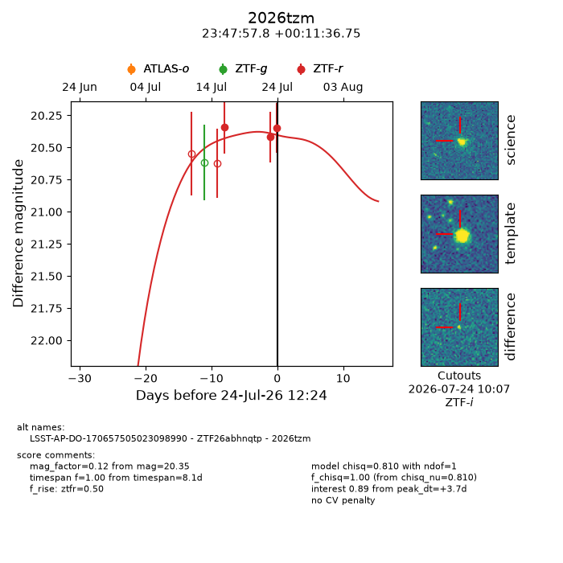
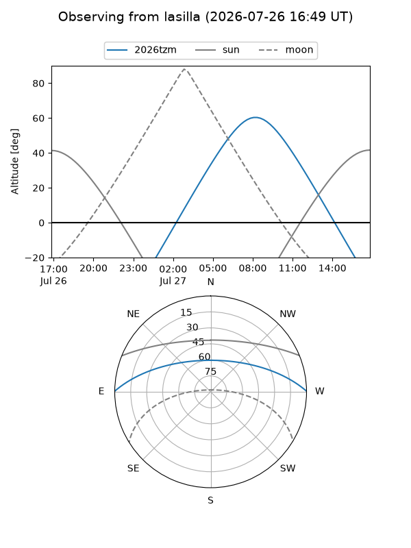
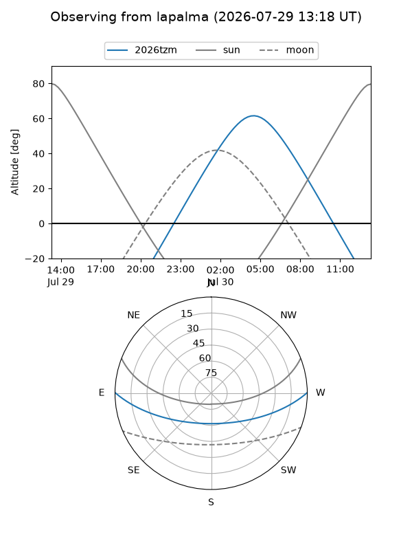
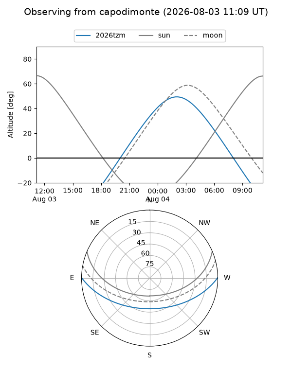
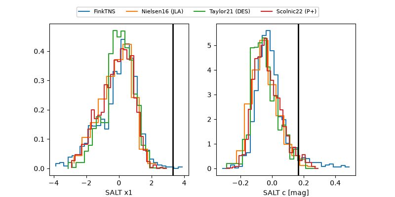

2026tzm
Target 2026tzm at 2026-07-24 12:26
Aliases and brokers:
FINK-ZTF: ztf.fink-portal.org/ZTF26abhnqtp
Lasair-ZTF: lasair-ztf.lsst.ac.uk/objects/ZTF26abhnqtp
ALeRCE-ZTF: alerce.online/object/ZTF26abhnqtp
YSE-PZ: ziggy.ucolick.org/yse/transient_detail/2026tzm
TNS name: wis-tns.org/object/2026tzm
Direct TNS query: direct search
alt names
ZTF26abhnqtp (ztf,fink_ztf)
2026tzm (tns,yse)
LSST-AP-DO-170657505023098990 (iau_lsst)
Coordinates:
equatorial (ra, dec) = 356.9910,+0.19354
equatorial (HMS+DMS) = 23:47:57.84,+00:11:36.75
galactic (l, b) = (91.1677,-58.70754)
Flags:
TNS type: nan
peak dt: +3.7
Photometry:
last ztfr=20.35
3 ztfr detections
Lightcurve

Visibility



Additional plots
